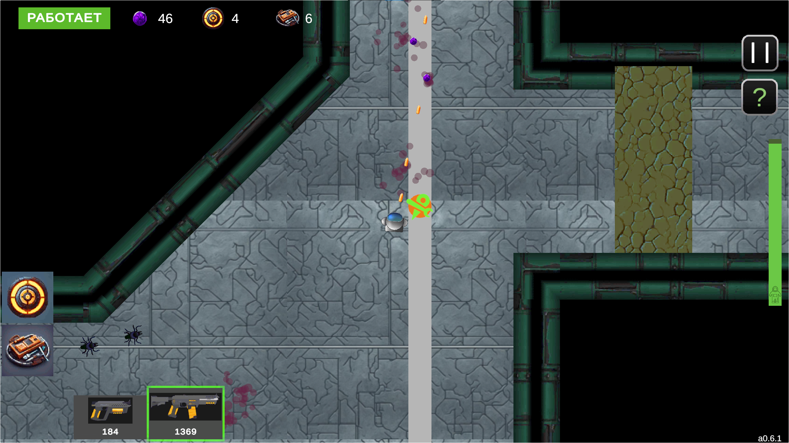

Bio Matter
[играть]
Сюжетноориентированная однопользовательская игра для WEB, адаптированная под мобильные утройства и ПК, в "жанре" арена шутера с элементами рогалика
Роль в команде: разработчик
Содержит:
- 3 уровня
- 4 вида противников
- 3 вида оружия
- 2 расходника
- 1 финальный босс
- Звуки и музыка


